★SGL User's Manual
★PROGRAMMER'S TUTORIAL
★SGL User's Manual
★PROGRAMMER'S TUTORIAL
本章では、３Ｄグラフィックスの基礎となる考え方とそれを実現するサブルーチンについて説明します。
また、本章では主に座標変換と呼ばれる数学的手法を用いて話を進めていきます。行列式の演算など、
通常とは少し異なる手法を多用しますので読解が困難とは思いますが、３Ｄグラフィックスの基礎となる部分ですので、
何度も読んで理解するようにしてください。
３Ｄグラフィックスによって映し出されるオブジェクトは、おおむね次の４つによって定義されます。
この４つを組み合わせることによって、３Ｄグラフィックスはモニターに映像を映し出すことが可能になります。 そこで本章では、ビューイング変換を除いた３つを順に説明し、その後で更に詳しい説明を付け加えていくことにします。
＜図4-1 セガサターンが用いる座標系＞
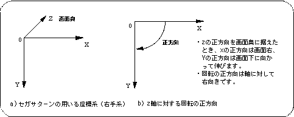
＜図4-2 画面座標系＞
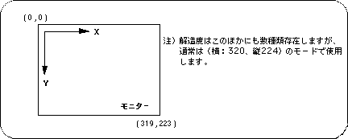
＜図4-3 投影の考え方＞
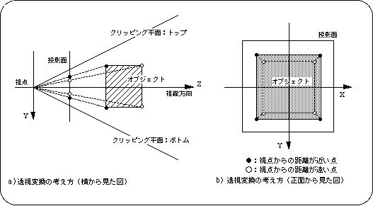
図4-4 ＳＧＬにおける投影面
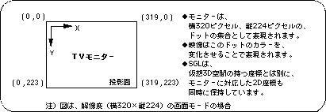
＜図4-5 画角イメージモデル＞
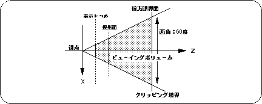
SGL上で透視投影の設定を変更するには、関数“slPerspective”を使用してください。
＜図4-6 画角値による映像の差異＞
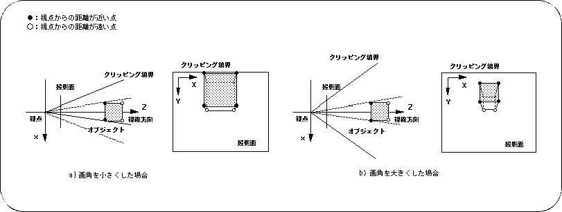
表示レベルの設定は、関数“slZdspLevel”で行います。
表示レベルは、視点と投影面の分割点のどの位置からを投影するかで決定されます。
| 表示レベル | |||
|---|---|---|---|
| 1/2 | 1/4 | 1/8 | |
| 代入値 | １ | ２ | ３ |
図4-7 表示レベル
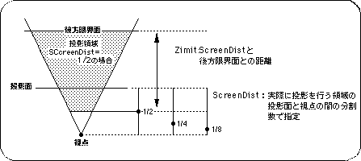
リスト4-1 sample_4_2：パースによる映像の変化
/*----------------------------------------------------------------------*/
/* Perspective Control */
/*----------------------------------------------------------------------*/
#include "sgl.h"
extern PDATA PD_CUBE;
void ss_main(void){
static ANGLE ang[XYZ];
static ANGLE angper[XYZ];
static FIXED pos[XYZ];
static ANGLE tmp = DEGtoANG(90.0);
static ANGLE adang = DEGtoANG(0.5);
slInitSystem(TV_320x224,NULL,1);
slPrint("Sample program 4.2" , slLocate(6,2));
ang[X] = DEGtoANG(30.0);
ang[Y] = DEGtoANG(45.0);
ang[Z] = DEGtoANG( 0.0);
pos[X] = toFIXED(50.0);
pos[Y] = toFIXED(40.0);
pos[Z] = toFIXED(20.0);
slPrint("Perspective : " , slLocate(4,5));
while(-1){
slPerspective(tmp);
slPrintHex(slAng2Dec(tmp) , slLocate(18,5));
tmp += adang;
if (tmp > DEGtoANG(160.0))
adang = DEGtoANG(-0.5);
if (tmp < DEGtoANG(20.0))
adang = DEGtoANG(0.5);
slPushMatrix();
{
FIXED dz;
dz = slDivFX(slTan(tmp >> 1), toFIXED(170.0));
slTranslate(pos[X] , pos[Y] , pos[Z] + dz);
slRotX(ang[X]);
slRotY(ang[Y]);
slRotZ(ang[Z]);
slPutPolygon(&PD_CUBE);
}
slPopMatrix();
slSynch();
}
}
フロー4-1 sample_4_2：パースによる映像変化のフローチャート
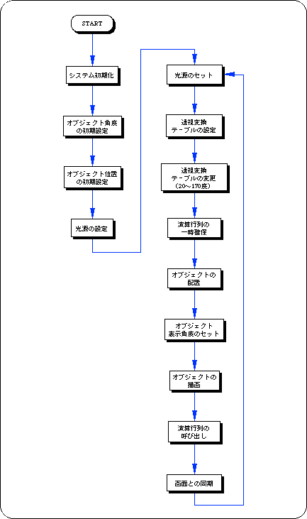
＜図4-8 オブジェクトに対する各種変換操作＞
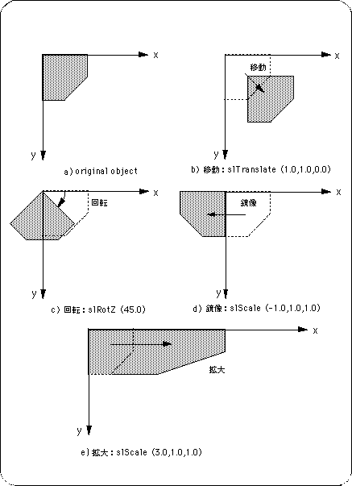
注）角度及び変数は便宜上、度数表示とフローティングで示してあります。
次のリスト 4-2 は、第2章のリスト2-1 で描画した正方形ポリゴンをライブラリ関数“slRotY”を用いてＹ軸で回転させる（単軸回転）プログラムです。回転マトリクスは次式で表されます。
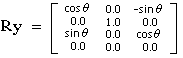
＜リスト4-2 sample_4_3_1：正方形ポリゴン単軸回転ルーチン＞
/*----------------------------------------------------------------------*/
/* Rotation of 1 Polygon [Y axis] */
/*----------------------------------------------------------------------*/
#include "sgl.h"
extern PDATA PD_PLANE1;
void ss_main(void)
{
static ANGLE ang[XYZ];
static FIXED pos[XYZ];
slInitSystem(TV_320x224,NULL,1);
slPrint("Sample program 4.3.1" , slLocate(9,2));
ang[X] = ang[Y] = ang[Z] = DEGtoANG(0.0);
pos[X] = toFIXED( 0.0);
pos[Y] = toFIXED( 0.0);
pos[Z] = toFIXED(220.0);
while(-1){
slPushMatrix();
{
slTranslate(pos[X] , pos[Y] , pos[Z]);
slRotX(ang[X]);
slRotY(ang[Y]);
slRotZ(ang[Z]);
ang[Y] += DEGtoANG(5.0);
slPutPolygon(&PD_PLANE1);
}
slPopMatrix();
slSynch();
}
}
フロー4-2 sample_4_3_1：正方形ポリゴン単軸回転ルーチンフローチャート
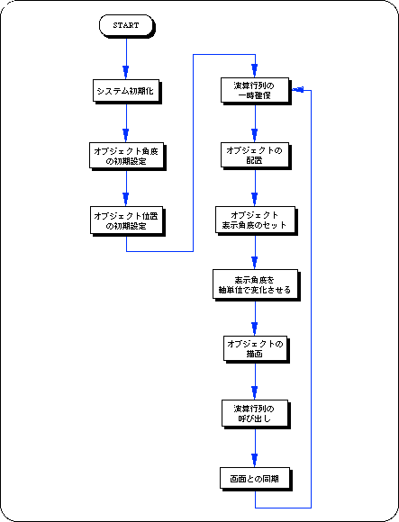
リスト4-3 sample_4_3_2：正方形ポリゴン２軸回転ルーチン
/*----------------------------------------------------------------------*/
/* Rotation of 1 Polygon [X & Y axis] */
/*----------------------------------------------------------------------*/
#include "sgl.h"
extern PDATA PD_PLANE1;
void ss_main(void)
{
static ANGLE ang[XYZ];
static FIXED pos[XYZ];
slInitSystem(TV_320x224,NULL,1);
slPrint("Sample program 4.3.2" , slLocate(9,2));
ang[X] = ang[Y] = ang[Z] = DEGtoANG(0.0);
pos[X] = toFIXED( 0.0);
pos[Y] = toFIXED( 0.0);
pos[Z] = toFIXED(220.0);
while(-1){
slPushMatrix();
{
slTranslate(pos[X] , pos[Y] , pos[Z]);
slRotX(ang[X]);
slRotY(ang[Y]);
slRotZ(ang[Z]);
ang[X] += DEGtoANG(4.0);
ang[Y] += DEGtoANG(2.0);
slPutPolygon(&PD_PLANE1);
}
slPopMatrix();
slSynch();
}
}
次のリスト 4-4 は、ライブラリ関数“slTranslate”を用いて、Ｘ軸に対して平行な移動を実現しています。移動パラメータの制御には、Sin値を使用しています。角値tmpの変化がＸ座標値の変化を制御します。
“slTranslate”による平行移動は次式で表されます。
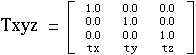
リスト4-4 sample_4_3_3：正方形ポリゴン平行移動ルーチン
/*----------------------------------------------------------------------*/
/* Parallel Translation of 1 Polygon [X axis] */
/*----------------------------------------------------------------------*/
#include "sgl.h"
#define POS_Z 50.0
extern PDATA PD_PLANE1;
void ss_main(void)
{
static ANGLE ang[XYZ];
static FIXED pos[XYZ];
static ANGLE tmp = DEGtoANG(0.0);
slInitSystem(TV_320x224,NULL,1);
slPrint("Sample program 4.3.3" , slLocate(9,2));
ang[X] = ang[Y] = ang[Z] = DEGtoANG(0.0);
pos[X] = toFIXED( 0.0);
pos[Y] = toFIXED( 0.0);
pos[Z] = toFIXED(220.0);
while(-1){
slPushMatrix();
{
slTranslate(pos[X] , pos[Y] , pos[Z]);
slRotX(ang[X]);
slRotY(ang[Y]);
slRotZ(ang[Z]);
tmp += DEGtoANG(5.0);
pos[X] = slMulFX(toFIXED(POS_Z), slSin(tmp));
slPutPolygon(&PD_PLANE1);
}
slPopMatrix();
slSynch();
}
}
＜フロー4-3 sample_4_3_3：正方形ポリゴン平行移動フローチャート＞
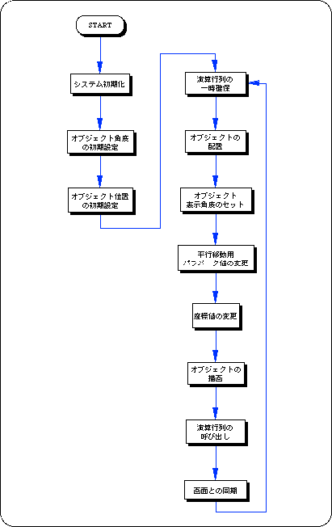
| パラメータ範囲 | |||||
|---|---|---|---|---|---|
| scale＜0.0 | scale=0.0 | 0.0＜scale＜1.0 | scale=1.0 | 1.0＜scale | |
| 変換結果 | 鏡像 | 消失 | 縮小 | 等倍 | 拡大 |
注）”scale”はスケールパラメータを指します。
次のリスト 4-5 は、拡大縮小を実現するプログラムです。正方形ポリゴンのＸ軸方向、Ｙ軸方向のスケール比を変化させています。
リスト4-5 sample_4_3_4：正方形ポリゴン拡大縮小ルーチン
/*----------------------------------------------------------------------*/
/* Expansion & Reduction of 1 Polygon [X & Y axis] */
/*----------------------------------------------------------------------*/
#include "sgl.h"
extern PDATA PD_PLANE1;
void ss_main(void)
{
static ANGLE ang[XYZ];
static FIXED pos[XYZ];
static FIXED sclx, scly, sclz, tmp = toFIXED(0.0);
static Sint16 flag = 1;
slInitSystem(TV_320x224,NULL,1);
slPrint("Sample program 4.3.4" , slLocate(9,2));
ang[X] = ang[Y] = ang[Z] = DEGtoANG(0.0);
pos[X] = toFIXED( 0.0);
pos[Y] = toFIXED( 0.0);
pos[Z] = toFIXED(220.0);
sclx = scly = sclz = toFIXED(1.0);
while(-1){
slPushMatrix();
{
slTranslate(pos[X] , pos[Y] , pos[Z]);
slRotX(ang[X]);
slRotY(ang[Y]);
slRotZ(ang[Z]);
if (flag == 1) tmp += toFIXED(0.1);
else tmp -= toFIXED(0.1);
if (tmp > toFIXED( 1.0)) flag = 0;
if (tmp < toFIXED(-1.0)) flag = 1;
slScale(sclx + tmp , scly - tmp , sclz);
slPutPolygon(&PD_PLANE1);
}
slPopMatrix();
slSynch();
}
}
＜フロー4-4 sample_4_3_4：正方形ポリゴン拡大縮小フローチャート＞
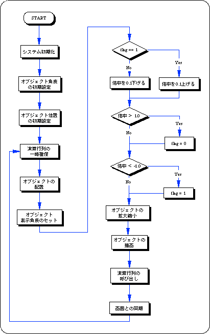
正弦値、余弦値を代入してＸ軸回りの回転を加えます。
パラメータには、それぞれSin値、Cos値をFIXED型の数値で代入します。
正弦値、余弦値を代入してＹ軸回りの回転を加えます
パラメータには、それぞれSin値、Cos値をFIXED型の数値で代入します。
正弦値、余弦値を代入してＺ軸回りの回転を加えます。
パラメータには、それぞれSin値、Cos値をFIXED型の数値で代入します。
原点を通る任意軸回りの回転を加えます（軸単位はベクトル値として指定）。
パラメータには、回転軸を表す単位ベクトル値（ＸＹＺ）及び回転角値を代入します。
回転軸を表すベクトル値は、常に単位ベクトルとなるような値を代入してください。
単位ベクトルとは、常に大きさが１となるようなベクトルを指します。
＜図4-9 変換順序による結果の相違＞
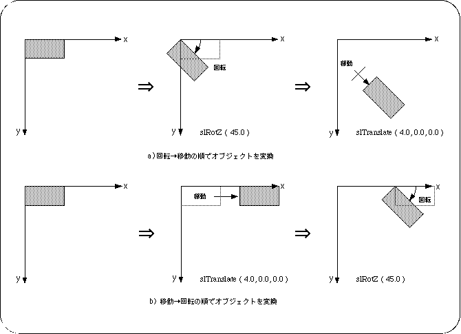
注）角度及び変数は便宜上、度数表示とフローティングで示してあります。
＜図4-10 ２Ｄクリッピングの例＞
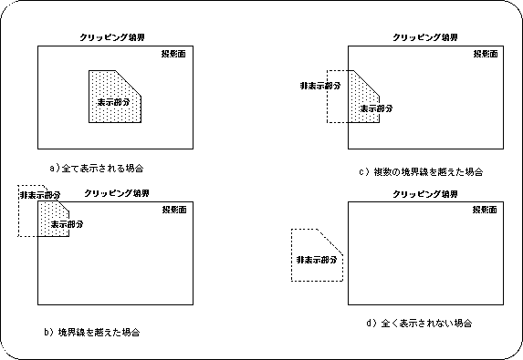
注）クリッピング境界によって閉じられた投影面を表示領域とした場合
上図のように、クリッピングの対象となったオブジェクトはクリッピング領域の内外で表示・非表示を切り替えられます。この例の場合、１つのオブジェクトがクリッピング領域の双方にかかった場合、オブジェクトの一部（領域内）が表示され、一部（領域外）が表示 されないようになっています。
注意
場合により、計算速度、描画速度の問題から、１つのオブジェクトがクリッピング領域に含まれる割合によって、表示・非表示が切り替えられることもあります。
| 視野の左側面 | ：クリッピング平面（画角値により決定） |
| 視野の右側面 | ：クリッピング平面（画角値により決定） |
| 視野の上面 | ：クリッピング平面（画角値及び画面モードにより決定） |
| 視野の下面 | ：クリッピング平面（画角値及び画面モードにより決定） |
| 視野の前面 | ：前方限界面（関数“slZdspLevel”で決定） |
| 視野の後面 | ：後方限界面（関数“slWindow”中のパラメータ“Zlimit”で決定） |
図4-11 ３Ｄクリッピングによる表示領域の定義
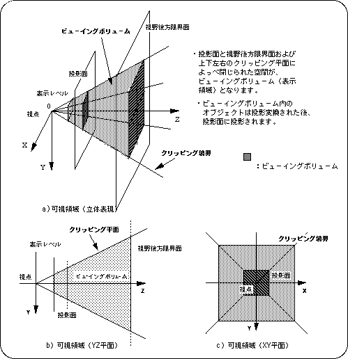
図4-12 ３Ｄクリッピングの例
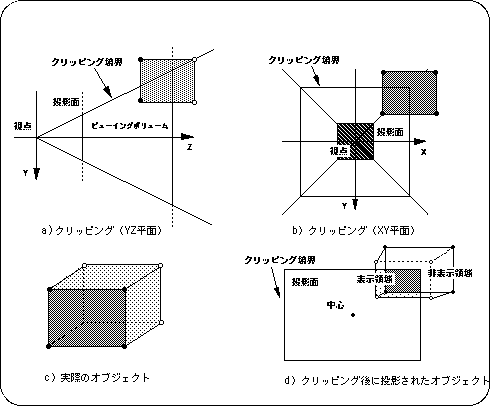
＜図4-13 ウィンドウの概念＞
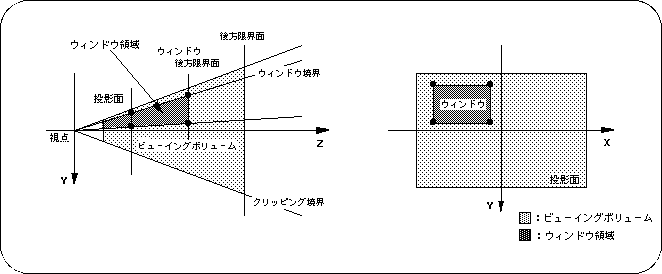
図4-14 “slWindow”におけるパラメータの意味
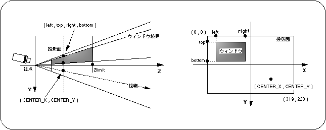
注）left , top , right , bottom , CENTER_X , CENTER_Y は、モニターに対するＸＹ座標値を示します。
図4-15 CENTER_X、CENTER_Yによる映像の差異
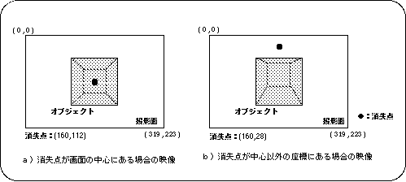
注）オブジェクト、視点などの条件はａ）ｂ）ともに同じ
●画面モード(横320×縦240)の場合slWindow(0,0,319,223,0x7FFF,160,112); | | | | | 消失点座標値：画面中心 | Zlimit ウィンドウ範囲指示座標値
図4-17 ウィンドウを利用したオブジェクト表示例
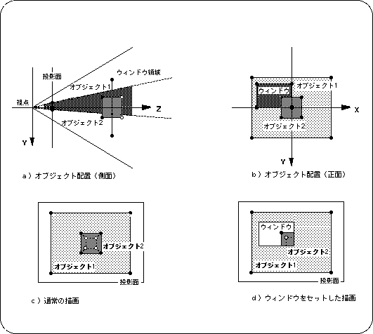
注１）オブジェクト1 は、ウィンドウ外で表示
注２）オブジェクト2 は、ウィンドウ内で表示
/* 前略 */
ATTR attribute_PLANE[] = {
ATTRIBUTE(Single_Plane, SORT_MIN, No_Texture, C_RGB(16,16,16), No_Gouraud, MESHoff|Window_Out, sprPolygon,No_Option),
ATTRIBUTE(Single_Plane, SORT_MIN, No_Texture, C_RGB(00,31,31), No_Gouraud, MESHoff|Window_Out, sprPolygon,No_Option),
};
ATTR attribute_CUBE[] = {
ATTRIBUTE(Single_Plane, SORT_MIN, No_Texture, C_RGB(31,31,31), No_Gouraud, MESHoff|Window_In, sprPolygon,No_Option),
ATTRIBUTE(Single_Plane, SORT_MIN, No_Texture, C_RGB(31,00,00), No_Gouraud, MESHoff|Window_In, sprPolygon,No_Option),
ATTRIBUTE(Single_Plane, SORT_MIN, No_Texture, C_RGB(00,31,00), No_Gouraud, MESHoff|Window_In, sprPolygon,No_Option),
ATTRIBUTE(Single_Plane, SORT_MIN, No_Texture, C_RGB(00,00,31), No_Gouraud, MESHoff|Window_In, sprPolygon,No_Option),
ATTRIBUTE(Single_Plane, SORT_MIN, No_Texture, C_RGB(31,31,00), No_Gouraud, MESHoff|Window_In, sprPolygon,No_Option),
ATTRIBUTE(Single_Plane, SORT_MIN, No_Texture, C_RGB(00,31,31), No_Gouraud, MESHoff|Window_In, sprPolygon,No_Option),
};
/* 後略 */
ウィンドウの設定は、同時に一つしか作用しません。 また、関数“slWindow”を呼び出すと、それ以前のポリゴン（スプライト）とそれ以降のものとはプライオリティが切り離され、この場合、後のものが常に優先されます。
: /* ウィンド１(デフォルト) */ slPutPolygon(object1); : slPutPolygon(object2); : slWindow(.....); ← : /* ウィンド２ */ slPutPolygon(object3); : slWindow(.....); ←エラー : /* ウィンド２のまま */ slPutPolygon(object4); : slPutPolygon(object5); :
関数型 | 関数名 | パラメータ | 機 能 |
|---|---|---|---|
| void | slPerspective | ANGLE angp | 透視変換テーブルの諸設定 |
| void | slRotX | ANGLE angx | ポリゴンデータのX軸回りの回転 |
| void | slRotY | ANGLE angy | ポリゴンデータのY軸回りの回転 |
| void | slRotZ | ANGLE angz | ポリゴンデータのZ軸回りの回転 |
| void | slRotXSC | FIXED sn,FIXED cs | Sin,Cosを指定してX軸回りの回転 |
| void | slRotYSC | FIXED sn,FIXED cs | Sin,Cosを指定してY軸回りの回転 |
| void | slRotZSC | FIXED sn,FIXED cs | Sin,Cosを指定してZ軸回りの回転 |
| void | slRotAX | FIXED vx,vy,cz,ANGLE a | 原点を通過する任意軸回りの回転(軸単位:ベクトル) |
| void | slScale | FIXED sx,sy,sz | ポリゴンデータの拡大縮小 |
| void | slWindow | lft,top,rgt,btm,Zlimit,CNTX,CNTY | ウィンド設定 |
| void | slZdspLevel | level | ビューイングボリュームの表示レベル指定 |
★SGL User's Manual
★PROGRAMMER'S TUTORIAL